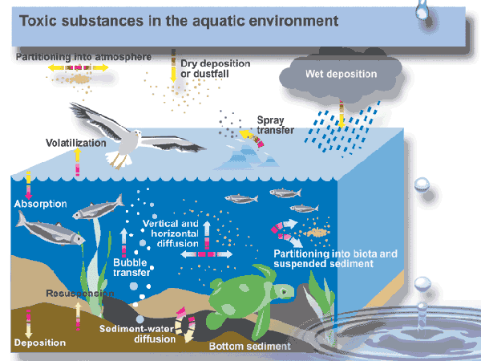

Unit 4: Solutions and Solubility
Activity 1: Water Everywhere
Content
Did you know?

|
The human body is approximately 2/3 water. |
|---|
Water is a very unique molecule, one that all living organisms need to survive. It can be found in the seas, ground and sky. It travels between and amongst living and nonliving things, taking with it some interesting “passengers”.
It is the presence of these passengers that can make water a harmful substance. Presently, there are concerns regarding prescription drugs, hormones, pesticides and other uncontrolled substances being emitted into the environment. Sources of these harmful substances include both domestic and industrial use and waste. Human activities, over time, have certainly changed God’s landscape.

Toxic substances in the aquatic environment.
The graphic above demonstrates the various ways toxic substances enter, move about, and exist in the aquatic environment:
|
|
Source: Environment Canada |
Source: Environment Canada
Source: Environment Canada
Technology is available for water and sewage treatments. But, the treatment is dependent on location and availability of appropriate infrastructure in rural and urban areas. Waste water from domestic use in rural areas is mostly accomplished through a septic system. Here, the potential for contaminating the water supply is great because of the lack of sophisticated equipment. Examine the graphic below showing a typical septic water treatment situation in a rural area.

Source: Environment Canada
 Questions
Questions
- In the long term, what potential water table problem could there be in the septic tank scenario?
 Answer
Answer
Journal
| Make a note regarding how water and its contaminants could be transported in and around an aquatic environment. |
Reflection
In preparation for the assignment, take a closer look at the graphics above, Reflect on, and make a preliminary list of, possible contaminants that could be found in water due to human activities such as: industrial activities (waste and chemical spills), transportation, domestic water, sewage, landfill sites, and agricultural activities. |
To learn more about this topic you may wish to visit the following sites: |
This is a disclaimer. External Resources will open in a new window. Not responsible for external content.
Unless otherwise indicated, all images in this Activity are from the public domain or are © clipart.com or Microsoft clipart and are used with permission.